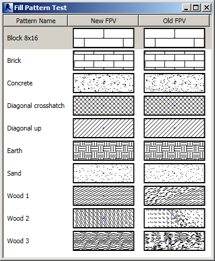

Fill Pattern Viewer Fix and Add Materials 2016
@kfpopeye discovered and fixed an issue with complex fill patterns in the venerable old WPF Fill Pattern Viewer Control by Victor Chekalin and Alexander Ignatovich.
The fill pattern viewer control is part of the AddMaterials Revit add-in to load new materials into a project based on a list defined in an Excel spreadsheet:
- Original implementation for Revit 2011
- Reimplementation for Revit 2014
- Improved error messages and reporting
- WPF FillPattern viewer control
- Check for already loaded materials
- FillPattern viewer benchmarking
Says kfpopeye:
I noticed the original didn't handle complex fill patterns properly. I made some enhancements to fix this.
Here is a link to download a Revit project that shows what I'm referring to.
It contains a macro that displays the new viewer next to the old one. You'll notice the "Wood #" patterns didn't display correctly in the old viewer.
The old viewer would sometimes draw the fill grids off the bitmap when the matrix was shifted too far or sometimes wouldn't fill the bitmap because it only repeated the line draw so may times. I made the viewer "smarter" by checking the shift versus the initial offset amount and checking to see if the line still intersects the bitmap.

I am providing kfpopeye's sample model with the macro definition here as well, in fill_pattern_viewer.rvt, in case the original download link goes away.
After some struggles back and forth we got the new viewer implementation integrated and running in the AddMaterials add-in.
I also took this opportunity to migrate it to Revit 2016:
You can always grab the most up-to-date version from the AddMaterials GitHub repository master branch.
Many thanks to kfpopeye for this enhancement!